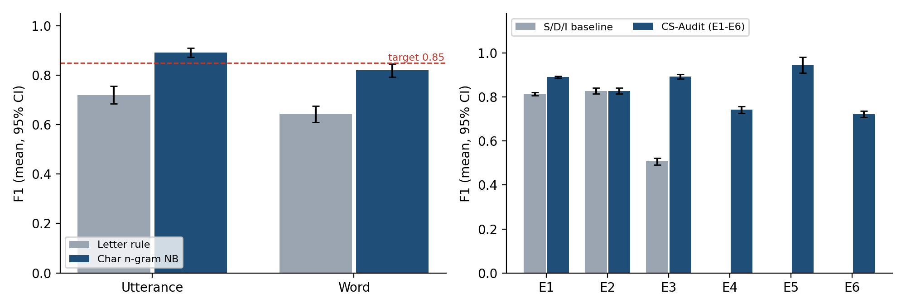
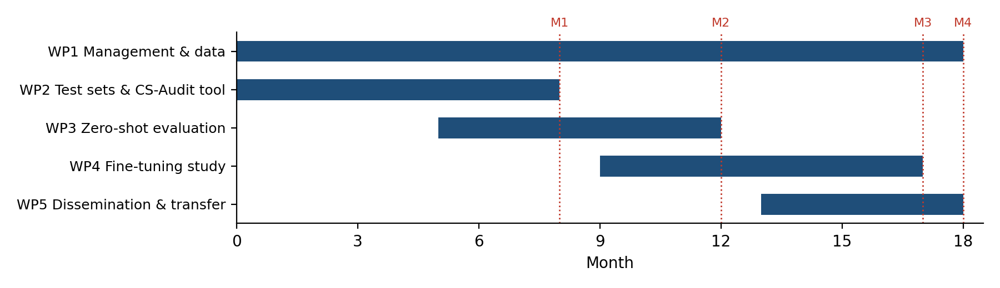

Title: CS-Audit: An Open Toolkit and Benchmark for Error-Level Evaluation of Speech Recognition on Kazakh and Kazakh–Russian Code-Switched Speech. Acronym: CS-Audit.
Abstract. Open Kazakh speech corpora and multilingual models such as Whisper now exist, but accuracy is reported as one word error rate (WER) per test set, mostly on read or broadcast speech, while everyday Kazakh is spontaneous and mixes Russian words into Kazakh sentences. Developers therefore cannot tell how much accuracy is lost on such speech or why. CS-Audit will deliver (i) an open pipeline that finds code-switched utterances in reference transcripts and classifies every recognition error into six classes (substitution, deletion, insertion, wrong language or script, loanword or number error, hallucination), (ii) test sets of read, spontaneous and code-switched Kazakh built from open corpora, and (iii) a study of how much fine-tuning on 10, 50 and 100 hours of open data repairs each error class. A first prototype, tested on simulated recognition output with known errors (20 seeds), detects code-switched utterances with F1 = 0.89 (letter-rule baseline 0.72) and classifies errors with macro-F1 = 0.84 (baseline 0.36). A first check on real ASR output (a commercial API, Soniox, on 20 phrases recorded by the author) ran end to end and labelled all five real errors in line with manual inspection. This supports technical feasibility at TRL 3. The 18-month project aims at TRL 5 with real recognition output on real corpora, and releases all code and data under open licences.
Automatic speech recognition (ASR) underlies voice assistants, subtitling and call analytics. Whisper was trained on 680,000 hours of audio [9], but Kazakh is under-represented: Whisper-large reaches 43.58% WER on the FLEURS Kazakh test set [3]. Kazakh data have grown (KSC with 332 h [2], KSC2 with more than 1,000 h including code-switched utterances [7]), yet the problem remains: a company that builds a Kazakh voice product does not know how its model behaves on spontaneous speech with Russian words, which errors dominate, and how much extra data is worth collecting. This matters for the use of the state language in digital services.
Type of R&D. The project is applied research (new methods and a benchmark with a practical aim) with a component of experimental development (a working toolkit). Frascati criteria [8]: novel: no error-level, speech-type comparison for Kazakh–Russian speech was found in the literature reviewed; creative: a new combination of automatic code-switch detection and a six-class error scheme tailored to Kazakh; uncertain: it is not known whether code-switching can be detected and errors classified automatically with sufficient reliability, nor how fine-tuning gains behave between 10 and 100 h; systematic: planned work packages, preregistered metrics and statistics; transferable/reproducible: open code, data lists and annotation guide, reusable for other Turkic languages.
Multilingual models. Whisper is open and multilingual, but quality follows the amount of data per language [9]. For Kazakh, fine-tuning and decoding matter: a small Whisper model had WER above 100% before fine-tuning, and pseudo-labels with a language model reduced Whisper-large to 32.36% on FLEURS [3]. A community Whisper Large V3 fine-tuned on KSC2 reports about 17.7% WER on its own split and no code-switching evaluation [11]. Commercial APIs (e.g. Soniox [13]) support Kazakh and Russian in one stream, but publish no error-level results for mixed speech. Resources. KSC reached 8.7% WER with a trained baseline [2]; KSC2 extends the data to broadcast, parliament and podcast speech with code-switching [7]; a multilingual Kazakh–Russian–English model has been studied [6]. Code-switching. It is a known difficulty because models are trained per language and mixed data are scarce [10]; for Hindi–English and Bengali–English the MUCS baselines reached about 32% WER on code-switched test data [1]. Metrics. WER hides the type of error [5].
Gap. (1) The same models are not compared on read, spontaneous and code-switched Kazakh under one protocol. (2) Error types are not analysed. (3) The effect of small fine-tuning sets is not measured per speech type. (4) No open tool exists to find code-switched Kazakh utterances and classify errors automatically.
TRL [4]. Current: TRL 3 (analytical and experimental proof of concept; reached by the prototype in Sec. 6, with a first end-to-end run on real ASR output). Target at project end: TRL 5 (components validated in a relevant environment: real recognition output from several models on real corpora).
Aim: to make the accuracy of Kazakh ASR measurable by speech type and error type, and to quantify what small-corpus fine-tuning achieves.
Quantitative, experimental and comparative: independent variables are speech type, model and fine-tuning hours; dependent variables are WER, CER and error-class shares. Data: Common Voice, FLEURS, KSC and KSC2 [2, 7]. Utterances are assigned to speech types from corpus metadata and the code-switch detector, then verified by listening. Fine-tuning subsets are nested and speaker-disjoint from test sets; hyper-parameters are chosen once on a development set; text normalisation (lower case, ё→е, punctuation and fillers removed) is identical for all systems.
Errors are aligned with the reference and assigned to E1 substitution, E2 deletion, E3 insertion, E4 wrong language or script, E5 loanword or number error, E6 hallucination (repeated or invented text). WER uses bootstrap intervals; speech types are compared with a paired bootstrap, error-class shares with a chi-square test (Holm correction), learning curves with seed means and spread.
Key technical uncertainty: can the audit pipeline find code-switched utterances and classify errors reliably from text alone, before any GPU is spent? The prototype (Python, csaudit.py) contains: (a) a code-switch detector, a character 1–4-gram naive Bayes language identifier for words (Kazakh vs Russian); (b) a word-level Levenshtein aligner and rule-based classifier for E1–E6; (c) a simulator that builds utterances from 42 Kazakh and 30 code-switched hand-written sentences (one or two sentences per utterance) and injects errors of known type, giving ground truth. Established loanwords (телефон, компьютер) are labelled Kazakh, so the detector must not flag them. The detector is trained on 60% of the sentences plus a list of 146 common Russian words and tested on utterances built from the held-out 40%. Baselines: a letter rule for detection (a word is Russian if it has no Kazakh-specific letter and contains a letter such as в, ф, ц, ч, щ, э, ю, я), and the standard substitution/deletion/insertion breakdown for classification. Success criteria (set before the run): detector utterance-level F1 ≥ 0.85; classifier macro-F1 ≥ 0.80 and at least 0.15 above the baseline. Each experiment was repeated for 20 random seeds (600 test utterances each); we report the mean and 95% t-interval.
Real-output check. The author recorded 20 short phrases (10 Kazakh, 10 Kazakh–Russian; phone microphone, read speech, one speaker). They were transcribed by the Soniox asynchronous API (model stt-async-v3, language hints kk, ru) [13]; the read text is the reference. This tests that the pipeline runs on real recognition output; it is not a model evaluation.
Table 1 and Fig. 1 show the results; the simulated recognition errors have a mean WER of 22.7% on Kazakh and 23.5% on code-switched utterances (set by the simulator, not a finding about real systems).
| Detector (utterance level) | Precision | Recall | F1 |
|---|---|---|---|
| Letter rule (baseline) | 0.834 ± 0.043 | 0.642 ± 0.044 | 0.721 ± 0.035 |
| Character n-gram NB (CS-Audit) | 0.823 ± 0.031 | 0.979 ± 0.018 | 0.892 ± 0.019 |
| Word level: rule / NB F1 | 0.643 ± 0.033 / 0.820 ± 0.027 | ||

Classifier. Macro-F1 is 0.837 ± 0.005 for CS-Audit and 0.358 ± 0.004 for the baseline (difference 0.48). Per-class F1: E1 0.891, E2 0.828, E3 0.894, E4 0.742, E5 0.946, E6 0.722. All three success criteria were met. The weakest classes are E4 (recall 0.66: a Kazakh word written in Russian spelling is often still identified as Kazakh, so the share of E4 is underestimated, 8.4% estimated vs 10.6% true) and E6 (recall 0.69: a hallucinated repetition is sometimes aligned as a substitution).
| Phrases | Words | WER | Errors found by CS-Audit |
|---|---|---|---|
| Kazakh (10) | 44 | 4.5% | 2 × E5: тоғызда → 9-да, екі → 2 |
| Code-switched (10) | 45 | 6.7% | 3 × E1: собеседованиеге → собеседованиеға, характері → характеры, нормально → нормальный |
stt-async-v3 on 20 phrases recorded by the author; errors labelled by CS-Audit.The pipeline ran end to end on real output. All five errors were labelled in line with manual inspection, and the detector marked all 10 code-switched and none of the 10 Kazakh references (letter rule: 8 of 10). The errors are of a type the simulator under-represents: the ASR wrote numbers as digits (a normalisation issue, not a recognition failure), and on Russian stems it chose the wrong Kazakh suffix or the Russian ending (-ға for -ге, -ы for -і). Such errors are labelled E1, which suggests a dedicated sub-class for suffix errors on Russian stems. With 20 phrases and 5 errors these figures are illustrative only and carry no statistical weight; some Russian words (вообще, короче) also occur in the detector's training sentences.
TRL claim. TRL 3 is supported: the pipeline works end to end in a simulated environment, with results against baselines and success criteria fixed in advance, and it runs on real ASR output.
Limitations. (i) The main experiment uses simulated ASR output, so its numbers show that the tool recovers known error types, not how Whisper or other models behave; (ii) the sentences are few, hand-written and simple, and the simulator injects errors independently, so real error patterns will be harder; (iii) the real check has one speaker, read speech and only five errors; (iv) the Russian word list used for training is small; (v) the classification baseline is deliberately simple and cannot produce E4–E6, so the macro-F1 gap shows the added value of the scheme rather than superiority over a trained system. Next steps to TRL 4–5: run the pipeline on real Whisper and API output for KSC2 and Common Voice, measure detector quality on 600 manually verified real utterances, and tune the E4, E6 and suffix rules on real errors.
Five work packages over 18 months (Fig. 2). WP1 management, data and licences (M1–18); WP2 test sets and CS-Audit v1 (M1–8; D2.1 test sets, D2.2 tool; milestone M1, month 8: O1 met); WP3 zero-shot evaluation and error analysis (M6–12; D3.1 report; M2, month 12: O2 met); WP4 fine-tuning study (M10–17; D4.1 models and learning curves; M3, month 17: O3 met); WP5 dissemination and technology transfer (M14–18; D5.1 paper, D5.2 workshop and guide; M4, month 18: O4 met).

Scientific: the first comparison of the same models on three Kazakh speech types with an error-level analysis; a reusable scheme and test sets for Turkic languages that mix with Russian. Economic: companies building voice products can decide between a bigger model, more data and better text normalisation using learning curves in hours of audio, which translate into cost. Societal: better recognition of everyday Kazakh supports the state language in digital services and captioning for people with hearing impairment. Dissemination: open repository, a conference paper (for example Interspeech or SPECOM), a workshop and a guide for practitioners. Transfer route: release under Apache-2.0 (code) and CC BY (annotations), pilot with two local voice-technology companies, and a follow-on application for an applied-research call.
Team: principal investigator (0.2 FTE, speech/ML, scientific lead); research engineer (1.0 FTE, pipeline, training, evaluation); student researcher (0.5 FTE, annotation guide, analysis); two external annotators (subcontracted, Kazakh–Russian bilinguals).
| Category | Amount | Justification |
|---|---|---|
| Personnel | 42,000 | PI 9,000; engineer 27,000; student 6,000 |
| Equipment / computing | 3,000 | about 150 GPU-hours for 18 fine-tuning runs and evaluation, commercial API transcription of test sets, plus a margin |
| Consumables | 500 | storage and hosting of data and models |
| Travel | 2,500 | one international conference |
| Subcontracting | 2,000 | annotators, about 2 × 120 h, plus checking |
| Overheads (20% of direct) | 10,000 | institutional costs |
| Total | 60,000 |
| # | Risk | L | I | Mitigation |
|---|---|---|---|---|
| R1 | Real errors are harder to classify than simulated ones (classifier F1 drops) | M | H | Tune on real samples; keep manual check; report agreement |
| R2 | Too few code-switched utterances in open data | M | M | Use KSC2 podcasts; add consented recordings if needed |
| R3 | Corpus licence restricts redistribution of audio | L | M | Release only utterance IDs, labels and scripts |
| R4 | GPU time or budget is insufficient for 18 runs | M | M | Use LoRA, smaller models, fewer seeds with reported spread |
| R5 | Low annotator agreement (κ < 0.70) | M | M | Revise guide, re-train annotators, adjudicate |
| R6 | Staff turnover or delay | L | M | Documented code, two-person review, buffer in WP5 |
Ethics. Only public corpora under their licences are used; no personal data are collected, speakers are not identified, and any recordings added later require informed consent and data-protection review. The prototype recordings are the author's own voice; file metadata (including location) were removed before upload, and the audio was deleted from the API after transcription. FAIR data [12]. Findable: repository with DOI and metadata; Accessible: open download (utterance IDs, annotations, models where licences allow); Interoperable: standard formats (CSV/JSON, HuggingFace datasets); Reusable: licences, README, annotation guide, version tags and seeds. IP. Code Apache-2.0, annotations CC BY 4.0; third-party corpora keep their own licences; no patent is planned.
Tool: Anthropic Claude (an AI assistant). Purpose: drafting the text of this proposal and the slides, designing the prototype experiment, writing and running the prototype code (csaudit.py, soniox_eval.py, demo.py) and producing the figures. Extent: substantial; the student chose the topic, directed the work, recorded the 20 test phrases, and is responsible for checking that the content, citations and results are accurate. The reported results come from running the included code on simulated data and on the student's recordings; no result was invented. The video is presented by the student.
[1] A. Diwan et al., “Multilingual and code-switching ASR challenges for low resource Indian languages,” in Proc. Interspeech, 2021, pp. 2446–2450.
[2] Y. Khassanov et al., “A crowdsourced open-source Kazakh speech corpus and initial speech recognition baseline,” in Proc. EACL, 2021, pp. 697–706.
[3] J. Li, Y. Pu, Q. Sun, and W.-Q. Zhang, “Improving Whisper's recognition performance for under-represented language Kazakh leveraging unpaired speech and text,” in Proc. Interspeech, 2024, doi: 10.21437/Interspeech.2024-1790.
[4] J. C. Mankins, “Technology readiness levels: A white paper,” NASA, Office of Space Access and Technology, 1995.
[5] A. C. Morris, V. Maier, and P. Green, “From WER and RIL to MER and WIL,” in Proc. Interspeech, 2004, pp. 2765–2768.
[6] S. Mussakhojayeva, Y. Khassanov, and H. A. Varol, “A study of multilingual end-to-end speech recognition for Kazakh, Russian, and English,” in SPECOM, LNCS 12997, 2021, pp. 448–459.
[7] S. Mussakhojayeva, Y. Khassanov, and H. A. Varol, “KSC2: An industrial-scale open-source Kazakh speech corpus,” in Proc. Interspeech, 2022, pp. 1367–1371, doi: 10.21437/Interspeech.2022-421.
[8] OECD, Frascati Manual 2015: Guidelines for Collecting and Reporting Data on Research and Experimental Development. Paris: OECD Publishing, 2015, doi: 10.1787/9789264239012-en.
[9] A. Radford et al., “Robust speech recognition via large-scale weak supervision,” in Proc. ICML, PMLR 202, 2023.
[10] S. Sitaram, K. R. Chandu, S. K. Rallabandi, and A. W. Black, “A survey of code-switched speech and language processing,” arXiv:1904.00784, 2019.
[11] InflexionLab, “sybyrla: Whisper Large V3 fine-tuned for Kazakh (model card),” HuggingFace, 2025.
[12] M. D. Wilkinson et al., “The FAIR guiding principles for scientific data management and stewardship,” Sci. Data, vol. 3, Art. 160018, 2016.
[13] Soniox, “Speech-to-text API documentation (async transcription, model stt-async-v3),” soniox.com/docs, accessed Nov. 2026.
Run python3 csaudit.py (20 seeds, about 5 s, writes results.json and Fig. 1), python3 soniox_eval.py (real check, reads stored Soniox output, writes real_results.json) and python3 demo.py (excerpt below; --live <file> calls the API). Code: CODE_LINK_HERE.